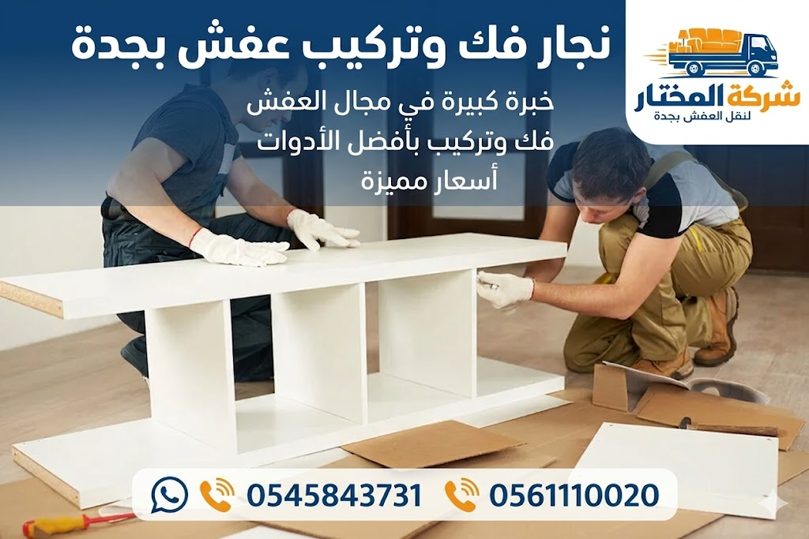

نجار فك وتركيب عفش بجدة: الاحترافية والدقة في كل قطعة
هل تبحث عن نجار فك وتركيب عفش بجدة موثوق وماهر؟ عملية نقل الأثاث أو تجديد المنزل تتطلب فك وتركيب القطع بدقة عالية لضمان عدم تلفها. في مدينة جدة الكبيرة، يكثر الطلب على فك وتركيب العفش بجدة سواء لغرف النوم، المطابخ، المكاتب أو حتى قطع الأثاث الحديثة مثل ايكيا. نحن في شركة المختار نقدم أفضل خدمة نجار فك وتركيب عفش بجدة بخبرة تمتد لسنوات، ونستخدم أحدث الأدوات لضمان فك وتركيب جميع أنواع الأثاث دون أي خدوش أو كسور. إن الاعتماد على معلم فك وتركيب اثاث بجدة غير الماهر قد يكلفك الكثير من الأضرار، لذلك اختر الحرفي المحترف الذي يضمن لك إعادة تركيب الأثاث كما كان بل أفضل. سواء كنت بحاجة إلى فك غرف النوم بجدة أو تركيب غرف النوم بجدة أو حتى فك وتركيب المطابخ بجدة، فإن فريقنا من النجارين المدربين جاهز لخدمتك على مدار الأسبوع. كما نقدم خدمة سريعة تشمل نقل العفش بدون أضرار بالتعاون مع أفضل شركات النقل. لا تتردد في التواصل معنا للحصول على عرض أسعار مجاني وفوري لخدمة فك وتركيب الاثاث بجدة. نحن نؤمن أن الأثاث الجيد يستحق التعامل الجيد، لذا نحرص على تغليف القطع المفككة لحمايتها أثناء النقل. اطلب نجار تركيب غرف نوم جدة اليوم واستمتع بخدمة احترافية بأسعار تنافسية.
اتصل الآن واطلب نجار فك وتركيب
خدمات نجار فك وتركيب عفش بجدة – حل شامل لجميع أنواع الأثاث
يقدم نجار فك وتركيب عفش بجدة لدينا خدمات متكاملة تشمل جميع أنواع الأثاث المنزلي والمكتبي. نحن ندرك أن كل قطعة أثاث تحتاج إلى تقنية خاصة في الفك والتركيب، خاصة القطع الكبيرة والحديثة. تشمل خدماتنا: فك وتركيب العفش بجدة لجميع غرف المنزل، بدءًا من غرف النوم والمجالس وصولاً إلى المطابخ الكاملة. كما أننا متخصصون في فك وتركيب الاثاث بجدة المستورد والحديث مثل الأثاث الإيطالي والتركي. نقدم أيضًا خدمة فك وتركيب المكاتب الإدارية وشركات بأقل وقت ممكن، مع الحفاظ على الترتيب والتسمية لكل قطعة لتسهيل إعادة التركيب. ما يميز فك وتركيب العفش بجدة لدينا هو استخدام أحدث المثاقب والمفكات الهوائية والأدوات المعزولة لتجنب خدش الأسطح. نحن نتعامل مع جميع أنواع الخامات: الخشب الصلب، MDF، الزجاج، المعدن، والأثاث الجلدي. بالإضافة إلى ذلك، نقدم استشارات مجانية حول أفضل طريقة لإعادة ترتيب الأثاث في المنزل الجديد. سواء كنت بحاجة إلى شركة فك وتركيب عفش جدة متخصصة أو تبحث عن نجار منزلي، فإن فريقنا هو الخيار الأمثل. نغطي جميع أحياء جدة ونقدم خدماتنا طوال أيام الأسبوع، بما في ذلك العطلات الرسمية. للتواصل الفوري والحصول على نجار محترف، اتصل الآن.
واتساب: اطلب نجار فك وتركيبأهمية الاستعانة بنجار محترف لفك وتركيب الأثاث
الكثير منا يظن أن فك وتركيب الأثاث عملية سهلة يمكن لأي شخص القيام بها، ولكن الحقيقة أن القيام بهذه المهمة دون خبرة قد يؤدي إلى خسائر فادحة. نجار فك وتركيب عفش بجدة المحترف يمتلك المهارات اللازمة لفك القطع الكبيرة والثقيلة مثل دولاب الملابس الضخم أو سرير الأبلكاش دون إتلاف المفصلات أو الأدراج. كما أن استخدام أدوات غير مناسبة قد يتلف دهانات الأثاث أو يسبب كسر في الزجاج. إن الاعتماد على معلم فك وتركيب اثاث بجدة يضمن لك سرعة الإنجاز وسلامة كل قطعة. نحن نقدم خدمة فك وتركيب الاثاث بجدة بضمان شامل، حيث نقوم بتفكيك الأثاث بشكل منظم، ونضع كل مسامير وبراغي في أكياس مخصصة مرفقة بعلامات تدل على موقعها، مما يسهل إعادة التركيب في المكان الجديد. كما نستخدم واقيات وزوايا بلاستيكية لحماية الزوايا الحادة أثناء النقل. الاحترافية في الفك والتركيب تطيل عمر الأثاث وتحافظ على قيمته. كثير من العملاء الذين جربوا النجارة العشوائية عانوا من قطع مفقودة أو تركيب معكوس، أما معنا فالنظام والدقة هما الأساس. لذلك إذا كنت بحاجة إلى فك غرفة نوم كاملة أو نقل مكتبة ضخمة، فلا تتردد في الاتصال بنا.
استشر نجار محترف الآنفك وتركيب غرف النوم بجدة بأحدث الأدوات
غرف النوم تعتبر من أكثر قطع الأثاث حساسية وتعقيدًا من حيث الفك والتركيب، خاصة إذا كانت تحتوي على أدراج متعددة أو مرايا كبيرة. نجار فك وتركيب عفش بجدة لديه خبرة كبيرة في التعامل مع جميع أنواع غرف النوم: الخشبية، الألمنيوم، والحديثة. تبدأ خدمتنا بمعاينة دقيقة لغرفة النوم لتحديد عدد القطع ونوعية المفصلات. ثم نقوم بفك قطع غرف النوم خطوة بخطوة، بدءًا من إزالة المرايا بحرص، ثم فك ألواح الدولاب الرئيسية، ونفصل الأسرة إلى أجزائها الأساسية. جميع المسامير والبراغي توضع في علب شفافة مكتوب عليها مكان كل منها. نقدم خدمة فك وتركيب غرف النوم بمعايير الجودة العالمية. كما أننا نحرص على تغليف الأجزاء الزجاجية والمرايا بطبقات من الفوم والبلاستيك الفقاعي لمنع الكسر. بعد الانتهاء من النقل، نقوم بإعادة تركيب غرفة النوم في موقعها الجديد بدقة متناهية، مع ضبط المفصلات والمقابض لتعمل بسلاسة. سواء كانت غرفة نوم كلاسيكية أو عصرية، فإن فريق نجار تركيب غرف نوم جدة لدينا قادر على إعادة تركيبها بشكل مثالي. ننصحك دائمًا بالاستعانة بمتخصص لفك غرف النوم الكبيرة بدلًا من المخاطرة بفكها بنفسك. اتصل بنا اليوم لتحصل على خدمة فك وتركيب غرف نوم بجدة بأسعار شفافة.
اطلب فك غرفة نوم عبر واتسابنجار تركيب أثاث ايكيا بجدة – فك وتركيب احترافي سريع
أثاث ايكيا يتميز بسهولة التركيب النظري، لكن عمليًا يحتاج إلى شخص خبير لتركيبه بشكل صحيح ومتين. نجار فك وتركيب عفش بجدة المتخصص في أثاث ايكيا يعرف كل تفاصيل قطع ايكيا ومكوناتها، بدءًا من المسامير السداسية وحتى أنظمة القفل. نحن نقدم خدمة تركيب أثاث ايكيا جدة سواء كان جديدًا تشتريه من المعرض أو تحتاج نقله من منزل لآخر. غالبًا ما يفقد أصحاب المنازل كتيبات التعليمات، ولكن فريقنا لديه الخبرة الكافية لتركيب أي قطعة من ايكيا بدون دليل. كما نضمن فك قطع ايكيا بدون كسر القطع الخشبية الرقيقة التي تعتمد على نظام الكام لوك. نحن نستخدم أدوات خاصة بمقاسات تتوافق مع براغي ايكيا. بالإضافة إلى ذلك، نقدم خدمة تغليف العفش بجدة لقطع ايكيا لحمايتها من الغبار والرطوبة أثناء النقل. كثير من عملائنا يطلبون منا تركيب غرف نوم ايكيا بالكامل أو خزائن ايكيا الحائطية. نحن نضمن لك تركيبًا دقيقًا ومستويًا باستخدام الميزان الإلكتروني لتفادي أي ميلان. إذا كنت تمتلك أثاث ايكيا وتحتاج إلى فك وتركيب احترافي، فاتصل بنا الآن.
احجز نجار تركيب ايكيا الآنفك وتركيب المطابخ الخشبية والألمنيوم بجدة
المطابخ من أكثر الأماكن التي تحتوي على عدد كبير من الوحدات والأدراج والرفوف، وعملية فكها تتطلب دقة عالية حتى لا تتلف أجزاء التوصيل. نجار فك وتركيب عفش بجدة المتخصص في المطابخ يستطيع فك جميع أنواع المطابخ سواء خشبية أو ألمنيوم أو HDF. نبدأ بفك أبواب المطبخ ورفعها بحرص، ثم فصل الوحدات العلوية عن السفلية، مع تفريغ الأدراج من محتوياتها. نحن نستخدم مفكات هوائية لفك المسامير بسرعة دون إتلاف الثقوب. كما نقدم خدمة نقل العفش بدون أضرار ويشمل ذلك تغليف أجزاء المطبخ بغطاء فقاعي وكرتون مقوى لضمان عدم تعرضها للصدمات. بعد النقل، نقوم بإعادة تركيب المطبخ في موقعه الجديد بدقة، مع التأكد من استواء الوحدات وتوازن الأبواب، وتثبيت المفصلات بقوة. يتطلب تركيب المطابخ أيضًا توصيل السباكة والغاز في بعض الحالات، ولكننا نهتم فقط بالجزء الخشبي والمعدني. ننصح دائمًا بالتعاقد مع فك وتركيب المطابخ بجدة من خلال فريق متخصص لضمان عدم تعطل المطبخ لاحقًا. اتصل بنا اليوم لتحصل على خدمة احترافية لفك وتركيب مطبخك.
اطلب فك وتركيب مطبخ عبر الواتسابنجار فك وتركيب المكاتب والشركات بجدة
نقل مكاتب الشركات يحتاج إلى تنظيم عالٍ وسرعة في الإنجاز حتى لا تتأثر سير العمل. نجار فك وتركيب عفش بجدة لدينا يقدم خدمات فك وتركيب المكاتب الإدارية بكفاءة عالية، سواء كانت مكاتب تنفيذية أو محطات عمل مفتوحة. نقوم بفك الأدراج، ورفع الألواح الزجاجية، وتفكيك الطاولات الكبيرة إلى أجزاء يسهل نقلها. نستخدم علامات ترقيم لكل قطعة لتسريع التركيب في الموقع الجديد. كما أننا نتعامل مع خزائن الملفات الثقيلة والرفوف المعدنية. نقدم خدمة نقل المكاتب والشركات بالتكامل مع فريقنا. الحرص على سلامة الأثاث المكتبي يعكس احترافية مؤسستك. كثير من مدراء الشركات في جدة يعتمدون علينا لسرعة إنجازنا ودقتنا. نحن نعمل خارج أوقات الدوام الرسمي لتجنب تعطيل العمل، ونقدم ضمانًا على فك وتركيب جميع الأثاث المكتبي. سواء كنت بحاجة إلى فك مكتب المدير التنفيذي أو نقل قاعة اجتماعات كاملة، فإن فريقنا جاهز. اتصل بنا للحصول على عرض سعر مجاني لخدمة فك وتركيب المكاتب بجدة.
استشر نجار مكاتب محترفخطوات فك وتركيب العفش بطريقة احترافية
عملية فك وتركيب العفش بجدة تحتاج إلى اتباع خطوات منظمة لضمان سلامة الأثاث وسرعة الإنجاز. أولاً: المعاينة والتقييم، حيث يقوم نجار فك وتركيب عفش بجدة بزيارة منزلك لتحديد نوع القطع وعددها والمواد المصنعة منها. ثانيًا: تجهيز الأدوات، حيث نجهز مفكات كهربائية، صناديق للبراغي، ومواد تغليف. ثالثًا: مرحلة الفك، حيث نبدأ بفك الأجزاء الصغيرة أولاً ثم الكبيرة، ونقوم بتفكيك الأثاث بطريقة عكس تركيبه مع وضع علامات على كل جزء. رابعًا: التغليف، نستخدم حماية الأثاث أثناء النقل عن طريق لف كل قطعة بغطاء فقاعي وزوايا كرتونية. خامسًا: النقل، يتم بواسطة سيارات مجهزة. سادسًا: التركيب في الموقع الجديد وفق العلامات المدونة. وأخيرًا: الفحص النهائي وضبط المفصلات والمقابض. هذه المنهجية التي نتبعها تجعلنا شركة فك وتركيب عفش جدة الرائدة في المجال. كل هذه الخطوات ننفذها بدقة مع الالتزام بالوقت المحدد. اطلع على خطوات نقل العفش لمعرفة المزيد.
اطلب الخطوات الاحترافية لفك وتركيب عفشكأسعار نجار فك وتركيب عفش بجدة – شفافية بدون مفاجآت
نحن نقدم اسعار نقل عفش جدة وكذلك أسعار فك وتركيب الأثاث بشكل منفصل. سعر فك وتركيب غرفة نوم يبدأ من 300 ريال شامل الفك والتركيب، بينما لو أردت فك فقط 150 ريال وتركيب 180 ريال. الجدول التالي يوضح الأسعار التقريبية لخدمات نجار فك وتركيب عفش بجدة. الأسعار تنافسية وتختلف حسب كمية القطع والمسافة. كما أننا نقدم خصومات للحالات المتعددة أو عند التعاقد على نقل العفش مع الفك والتركيب من خلال أرخص شركة نقل عفش في جدة المتعاونة معنا. أسعارنا تشمل الضريبة ولا توجد رسوم خفية. للحصول على عرض سعر مفصل، يرجى الاتصال بنا للمعاينة المجانية. ننصحك بمقارنة الأسعار والخدمات؛ نحن نقدم قيمة حقيقية مقابل كل ريال. كما نذكرك بأن التركيب الاحترافي يوفر عليك تكاليف إصلاح الأثاث مستقبلًا. فيما يلي جدول الأسعار التفصيلي:
| الخدمة | السعر يبدأ من (ريال) |
|---|---|
| فك غرفة نوم | 150 |
| تركيب غرفة نوم | 180 |
| فك وتركيب غرفة نوم (كامل) | 300 |
| فك مجلس | 150 |
| تركيب مجلس | 150 |
| فك وتركيب مطبخ | 400 |
| فك وتركيب مكتب | 250 |
| فك وتركيب أثاث كامل (شقة) | 500 |
أسعارنا تنافسية ومناسبة للجميع. تعرف على أسعار نقل العفش بجدة للاستفادة من العروض المجمعة.
اطلب عرض سعر مجاني الآنخدمة فك وتركيب العفش في جميع أحياء جدة
نقدم خدمات نجار فك وتركيب عفش بجدة في جميع أحياء جدة بدون استثناء. فريقنا يغطي شمال جدة (مثل حي السلامة، حي الفيصلية، حي النسيم) وكذلك جنوب جدة (مثل حي العزيزية، حي المنار، حي الصالحية) وشرق وغرب جدة. بفضل انتشار فرقنا، نصل إلى أي حي خلال وقت قياسي. سواء كنت في الأندلس، البغدادية، أو الحمدانية، فإن فك وتركيب العفش بجدة متاح لك على مدار الساعة. نحن نعرف طبيعة الأبنية في كل حي، ونستطيع التعامل مع الأدوار العالية والبوابات الضيقة. إذا كنت تقيم في حي المحمدية أو الشاطئ أو الكندرة، يمكنك الاعتماد علينا لتوفير نجار محترف لفك وتركيب الأثاث. لا تتردد في الاتصال بنا مهما كان موقعك في جدة، فالخدمة تشمل جميع المناطق بأسعار ثابتة وعادلة.
احجز نجار في حيك الآنلماذا تعد شركة المختار أفضل نجار فك وتركيب عفش بجدة
تتميز شركة المختار بأنها تقدم خدمات متكاملة تشمل النقل والفك والتركيب والتغليف. نحن نعتبر أفضل شركة نقل عفش بجدة بفضل فريقنا من النجارين المحترفين. ما الذي يجعلنا الأفضل؟ أولاً: نستخدم أحدث الأدوات الألمانية واليابانية لفك وتركيب الأثاث، مما يضمن عدم تشويه القطع. ثانيًا: نوفر ضمانًا مكتوبًا على جميع خدمات الفك والتركيب لمدة 30 يومًا. ثالثًا: نعمل بنظام التقييم المسبق المجاني، حيث نرسل فنيًا لتقييم العمل قبل التسعير. رابعًا: أسعارنا شفافة وثابتة، لا زيادة بعد الاتفاق. خامسًا: سمعتنا الطيبة من مئات العملاء في جدة. سادسًا: نقدم خدمات طارئة على مدار 24 ساعة. نحن نضمن لك نجار فك وتركيب عفش بجدة يصل في الوقت المحدد وينهي العمل بكفاءة عالية. كما نقدم أيضًا خدمات تخزين الأثاث مؤقتًا إذا احتجت لذلك. اختر الاسم الموثوق. للمقارنة، يوضح الجدول التالي الفرق بيننا وبين الشركات الأخرى:
| الميزة | شركتنا | شركات أخرى |
|---|---|---|
| نجارين متخصصين | ✓ | أحيانًا |
| ضمان على الخدمة | ✓ | ✗ |
| فك وتركيب احترافي | ✓ | ✓ |
| تغليف الأثاث | ✓ | أحيانًا |
| خدمة سريعة | ✓ | ✗ |
| دعم فوري واتساب | ✓ | ✗ |
نحن نضمن رضا العميل 100%. اتصل بنا اليوم لتجربة الفرق.
تعاقد مع أفضل نجار في جدةالأسئلة الشائعة عن نجار فك وتركيب عفش بجدة
كم سعر نجار فك وتركيب عفش بجدة؟
الأسعار تبدأ من 150 ريال للفك فقط، و300 ريال للفك والتركيب معًا، وتختلف حسب حجم القطع وعددها.
هل يتم فك وتركيب غرف النوم الكبيرة؟
نعم، نفك جميع أنواع غرف النوم بما فيها ذات الأحجام الكبيرة والمودرن ونعيد تركيبها باحترافية.
هل تقومون بتركيب أثاث ايكيا الجديد؟
نعم لدينا نجار متخصص في تركيب أثاث ايكيا وفكه دون الحاجة للكتيب، وبأسعار مميزة.
هل توجد خدمة طوارئ في نفس اليوم؟
نعم نوفر خدمة فورية خلال 3 ساعات حسب المنطقة، اتصل بنا للتأكد.
هل يتم فك المطابخ الألمنيوم؟
بالتأكيد، نفك وتركيب جميع أنواع المطابخ الألمنيوم والخشبية بجودة عالية.
كم تستغرق عملية فك وتركيب غرفة نوم كاملة؟
تستغرق من ساعة إلى ساعتين حسب تعقيد القطع ووجود مرايا.
هل تشمل الخدمة تغليف الأثاث؟
نعم نقدم خدمة تغليف الأثاث لحمايته أثناء النقل مقابل إضافة بسيطة.
هل لديكم ضمان على التركيب؟
نعم نقدم ضمانًا لمدة 30 يومًا على جميع أعمال الفك والتركيب.
هل تتعاملون مع المكاتب والشركات؟
نعم لدينا فريق خاص لفك وتركيب المكاتب الإدارية خارج أوقات الدوام.
كيف أحصل على عرض سعر دقيق؟
نقدم معاينة مجانية في موقعك لتحديد السعر بدقة، اتصل الآن لتحديد موعد.
هل تقومون بفك غرف النوم بدون تلف الجدران؟
نعم نستخدم أدوات احترافية وتقنيات تمنع خدش الجدران أو الأرضيات.
ما هي أحياء جدة التي تخدمونها؟
جميع أحياء جدة بما فيها السلامة، الفيصلية، النسيم، العزيزية، المنار، الصالحية، والمزيد.
هل لديكم نجارين سعوديين؟
لدينا فريق متعدد الجنسيات مدرب بشكل احترافي تحت إدارة سعودية.
هل تقدمون خدمة فك وتركيب خزائن حائط؟
نعم نقوم بفك وتركيب الخزائن الحائطية والمعلقة بكل دقة.
هل يمكن فك وتركيب الأثاث في نفس اليوم؟
نعم يمكن جدولة الفك صباحًا والتركيب بعد الظهر حسب الاتفاق.
بحاجة لـ نجار فك وتركيب عفش بجدة موثوق؟
اتصل بنا الآن أو راسلنا على واتساب للحصول على نجار محترف في أقرب وقت. معاينة مجانية وأسعار تنافسية.
خدماتنا تشمل: فك وتركيب العفش بجدة، نجار تركيب غرف نوم، فك مطابخ، تركيب ايكيا – جميع الأحياء